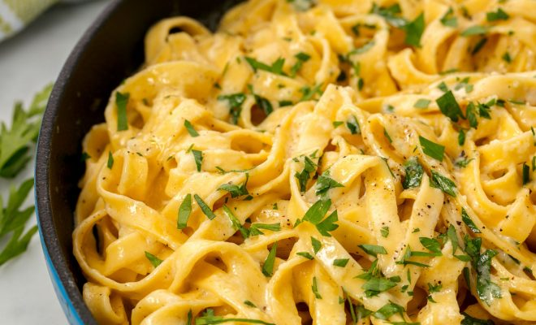

Pasta

Description
Pasta is a type of food typically made from an unleavened dough of wheat flour mixed with water or eggs,
and formed into sheets or other shapes,
then cooked by boiling or baking.
Ingredients
- 1 (16 ounce) package lasagna noodles
- 1 pound lean ground beef
- salt and pepper to taste
- 1 (16 ounce) jar spaghetti sauce
- 1 clove garlic, minced
- ½ pound shredded mozzarella cheese
- ½ pound shredded Cheddar cheese
- 1 pint ricotta cheese
Steps
- Place flour on a marble or wooden work surface. Make a well in the center and crack in the eggs;
add the salt. Gently beat eggs with a fork, incorporating the surrounding flour,
until batter is runny. Bring remaining flour into the batter using a bench scraper until dough forms a ball.
Mix in water, 1 tablespoon at a time, if dough feels too stiff.
- Knead dough with your hands by flattening the ball, stretching it and folding the top towards the center.
Turn 45 degrees and repeat until dough is soft and smooth, about 10 minutes.
- Shape dough into a ball. Place in a bowl and cover with plastic wrap.
Refrigerate until firm, 30 minutes to 1 hour.
- Bring a large pan of salted water to a boil.
Drop in tagliatelle and cook until tender yet still firm to the bite, 3 to 5 minutes. Drain.